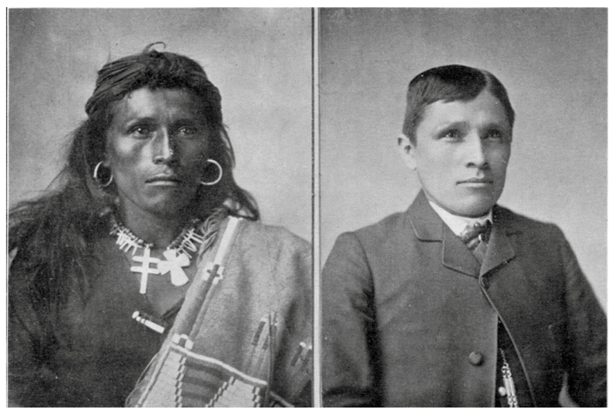

Indigenous Peoples
In the late nineteenth century and continuing into the twentieth century, the United States government and churches created what are called Native American Boarding Schools.
The sole purpose of these boarding schools was to assimilate Native American children into Western culture.  Boarding schools would strip Native American children of their cultural traditions by forcing them to dress and act by Western standards and learn Western values. On many occasions, the process of assimilation included degrading remarks from the instructors on the students and their culture. On the Native Words, Native Warriors
website dedicated to Native American involvement in World War II, there is a page specifically mentioning the Boarding School Tragedy.
The page goes on to briefly mention what assimilate looked like at these boarding schools, only taking three sentences to mention the positive outcomes of the institutions.
However, Julie Davis, author of American Indian Boarding School Experiences,
does not understate the ironic positive affect boarding schools had on indigenous peoples. Davis spends her article discussing various books2 written by those with Native American boarding school experience, or else with ties to one with such experience. She uses her comments to provide focus for the different experiences Native students had in these boarding schools. One fundamental conclusion
she had was that boarding school histories are complex
stating,
Boarding schools embodied both victimization and agency for Native people, and they served as sites of both cultural loss and cultural persistence. These institutions, intended to assimilate Native people into mainstream society and eradicate Native cultures, became integral components of American Indian identities and eventually fueled the drive for political and cultural self-determination in the late twentieth century. (Davis, 20).
Indeed, going on Davis describes how although the boarding schools were responsible for the cultural assault
of Native American children, this assault pushed the children and parents as well as school friends to cleave closer together, thus solidifying familial bonds and traditional values. Students comment that they made lasting friendships at these boarding schools stating that it was their ties
(21). Excluding a few instances, many students felt closer to their tribes and other Native students because of the common enemy they all had. These dynamics became an us versus them
situation, one in which the Native students were able to band together and develop stronger relationships with those who shared similar cultural values.
Another way in which familial bonds grew stronger was through letters parents would write to their children and vice versa. In one section of her article, Davis mentions how cultural assaults would often emerge in the form of banning home visits. She states, Administrators discouraged visits home, seeing them as threats to assimilation, and this sometimes led to three or four year separations.
Yet, these forced separations made letters to and from home all the more necessary and precious for Native families. Naturally, these letters were a form of written literacy, a Western literacy adoption used against the Western agenda. It is additionally ironic that boarding schools not only worked against their purpose of separating Native children from their tribal cultures, but the literacies learned within the boarding schools would later be used to provide more authority and cultural validation for Native Americans. Written literacies such as letter writing would later manifest in a much more public format: The Native American fiction novel. As Davis says,
Unintended to be sure, but the combination of oral literacies with written literacies certainly added to the emergence of Native American literature.
Native American fiction appeared in popularity during the 1930s3, following the Stock Market Crash and the emergence of the most widespread drought in America. As a form of escapism, many entertainers had their start during the Depression Era. Native American writers were no different. Coming out of the Industrial Age in American and the economic boom of the 20s, American society sought to find solace in forms of entertainment that gave them peace, escape, and hope. Priscilla Oaks, author of The First Generation of Native American Novelists,
mentions in her article, As the theme of progress changed to the theme of endurance, the literature of the 1930s turned to the Indian culture and its survival motif.
(Oaks, 58). For Native American writers, heroes were not typical white men, but Native heroes with struggles and enduring characteristics. Instead of a romantic, epic character,
Native American novels created characters that were often alienated.
Oaks comments that Native American writers portrayed their Native heroes realistically.
Such characters were rebellious
against the subservient role
given to them by dominant society (60). As opposed to their white foil characters, Native American characters were written with moral integrity and became more than stereotypical token characters for Native American novels. Often, these novels would showcase a hero proud of their ancestry and traditions with the ability to endure any hardship.
(64). These characteristics provided hope to readers during a time when endurance was necessary for Americans. Oaks writes, The Indian became a hero in the fiction of the Depression era and as a result, a genre of Indian literature was form
(59). With a new avenue for creative output, Native American writers were able to express their Native traditions and values in a society that previously shunned and stunted those values. Although Native Americans were still forced into boarding schools, simultaneously, the American populous was welcoming the start of a new era in American fiction. While many writers struggled, other creative writers focused on the humanity and endurance of Native heroes and were successful in bridging the void between the white culture and the red during a time of national crisis
resulting in the recognition for the values of American Indian life previously suppressed and denied.
(64). As Annette Portillo stated in her article over teaching Native American Literature,
(Portillo, 160). It is interesting to note that the Native American identity of endurance grew out of that generations
It was called the Renaissance
of Native American Literature. In the 1970s a spring of creative writing was published by Native American authors. This was a second wave of Native American fiction writers. Unlike the emergence of Native American fiction in the 1930s, by the 60s and 70s, Native American fiction already had a genre. And by this time, the genre had been influenced by white writers and the American Western genre. Writing about Native Americans was common for many American and Western writers. It is interesting to note that the two major bumps in popularity for Native American novels, Western genre writing was also receiving a significant bump in popularity. Oaks comments in a footnote that Western genre novels often featured some leaning characters who were Indian or pseudo-Indian heroes.
Likewise, in many Western novels the white protagonist (usually a male cowboy or law enforcement) was portrayed as fleeing civilization which had become too urban and corrupt
. Oaks comments that the character often admired the Indians, whose civilization possessed positive values and religious significance.
(Oaks, 64 (footnote 2). Unfortunately, not all Indian representation within Western novels were positive. Oaks also comments that while Western genre writers did portray Native characters are morally superior, they also adhered to popular Indian stereotypes. Many Native characters become trope characters while the white protagonist when on a spiritual
journey. This portrayal was developed due to the Indian characters being written by white writers. Patrice Hollrah in her article, Sherman Alexie
quotes AlexieMost non-Indians who write about Indians are fiction writers. Fiction about Indians sells. (One Stick Song, 22).
(Hollrah, 31). However, it isn
Indians rarely get to define our own image, and when white people do it, they often get assigned all this authority, and I guess that' s what my problem is, that Indians are never even allowed the authority to self-define.(31).
Native groups have been a people who have been consistently stripped of their ability and authority to self-define and creative writing had been an area that has helped them bridge the gap between Native American identity and the American identity. Yet, that authority has been taken away by the portrayal of Native people in novels written by white authors. In his argument, Alexie objects to whites writing about Native Americans, from a Native perspective, because they do not have an authentic Native perspective to write from. However, with the rebirth of Native American fiction, creative writers took back the reigns of Native American fiction and told their own stories of the Native identity.
John Purdy, author of Writing Indian, Native Conversations, used his book to critically look at how we define Native literature. In his book, Purdy discusses how the renaissance of the 70s helped bridge the gap between Native American literacy and its inclusion into the world of academics and critical appraisal. The popularity of Native American literature in the 1970s was accredited to also helping progress critical understanding of the genre and a reevaluation of the Canon4. One such writer was N. Scott Momaday, who won the Pulitzer Prize5 in 1969 on his first novel House Made of Dawn. This achievement not only became an area of pride for Native Americans and creative writers, but it also put Native American literature on the map. In an interview with Purdy, Paula Gunn Allen said, Without Momaday and House Made of Dawn and the Pulitzer Prize none of us would be here, because it made people in publishing and the academy more willing to pay attention than they had ever been.
(Purdy, 5). Native American culture had always been grounded in the oral tradition of storytelling. Momaday was able to revitalize the introduction of Native American literacies into a written outlet, one that could be experienced by others outside of the Native American community. Purdy likewise gave credit to Momadayaccomplish this delicate balance of appealing to a multicultural audience while remaining true to the specific cultures he or she is representing
, Momaday had been the first to obtain such a degree of success
(19). Momaday successfully bridged past Native American traditions and identities with literacies that could be integrated into American popular culture.
Below is an interview with N. Scott Momaday discussing Native American literacy, specifically oral tradition.
For Native American writers like Momaday, creative writing became a way to merge oral literacies with written literacies. Doing so allowed space for Native American traditions and values to be heard, read, and seen by other communities. Purdy writes, The advent of the baby boom generation and its exploration of culture certainly proved fertile ground for his prose, and a few years later the Flagstaff conference worked to direct that interest in college classrooms. It is no wonder, then, that the critical approaches to his book also chart the evolution of the scholarly study of contemporary written Native literatures in recent times.
(Purdy, 17). In fact, Momaday
Within the same interview, Allen describes how views of Native American literacy has changed. She states, The first [conference] I went to was, it must have been
. A few lines later Allen contrasts her previous experience with one a few years ago saying, Well, I know an Indian and he told that the Indian way is blahda blahda blahda blahda.
I feel completely comfortable, in terms of my responsibility to the community, because my job has been to work in the literary field, and that
(3). For Allen, literacy validation for her community had progressed to a place where she felt comfortable retiring. Validation for Native American tradition, culture, values, and creative literacies had found a place within the academic world.
In the same book, Purdy also includes an interview with Sherman Alexie, whose popularity in the 1990s he claims rejuvenated the discourse about Native arts,
much like Momaday did in the 1970s and Erdrich6 did in the 1980s (45). Within the interview, Alexie explains how Native American literature has changed throughout the years as the necessity for voice changed. Alexie states that unlike many older Native American writers, younger writers have started writing like he does.
They aren
(138). Native American literacy has changed from the 1930s now that tradition and culture have been validated. For Native American writers now, literacy validation means acknowledging what Native American means today. The question boils down to What is Indian? What does it mean to be Indian?
These questions can only be answered within the creative outlets utilized by Native Americans today. With regards to critical evaluation of Native American literacies, Alexie claims,
Actually, SAIL [Studies in American Indian Literature] is just fine... I' ve never seen a wider difference between good or bad in any academic journal. The bad ones are even more interesting, because they embrace, hang on to old ideas. I mean they' re not bad scholarship, they' re not badly written. What I mean is that no one has figured out a new way to look at Indian literatures. Above all else, Indians aren' t looking at Indian literatures. There are very few Indian scholars, very few Indian literature critics examining it. Those who do, like Gloria Bird or Robert Warrior or Liz Cook-Lynn, are still using the same old lit-crit tools. I think we have been far too nice to each other for too long now. I think Indian writers have grown enough, that we' re not going to get any better unless we really start hammering on each other. (136).
Although Native American literature has progress exponentially, there were still areas for improvement to validate Native American creative literacies within the Academy. While Native American may have made a space for Native American literacies on the bookshelves of America, Native American literacies still had room to grow in the classrooms of the university.
Native American Literature courses have had a space in academics for several decades, either in the form of Ethnic Literature
or Native American Literature.
However, many of these courses have been deemed inappropriate by Native Americans or members of the Indigenous communities in North America because of the misunderstanding and offensive tones and/or stereotypes often present in such courses. Joseph Bruchac, an Abenaki descendent and professor of ethnic literature, started teaching NAL in 1970 in New York. In his article, Four Directions: Some Thoughts on Teaching Native American Literature,
Bruchac describes the elements of NAL that he finds problematic. In describing a conversation had with other professors teaching NAL he wrote,
One of the people said that he was having a hard time finding texts. Another said that... he had some misgiving about the accuracy of the translations, though he didn' t know enough to know for sure how good they were. The third teacher... mentioned taking a course in how to teach Native American literature from a certain professor... the few Native American students on campus had signed up for the course but all dropped it because they found something objectionable about it. No one knew what. (Bruchac, 3).
This passage holds a lot of the root issues Bruchac found in man NAL courses. With the first professor, the difficulty in finding texts could be because there were not many appropriate texts readily available for student use. It could also be that this professorgood
text or bad
text was. With the last professor, the issue seemed to be with the professor
The [totality of Native American Literature] comes out of (in just the area now called the continental United States) more than 400 different languages and distinct cultures... .Yet, without any special preparation, without any real grounding in the cultures which produced those many literatures, without any familiarity with the languages from which they were translated... teachers on the university (and even high school) level are expected to teach thisNative American Literature.Not only that, most of those teachers have never visited a Native American community or spoken with a singer Native American. (4).
The main issue for Bruchac is that NAL courses were being taught by professors who did not come from a background of Indian studies or Native American culture and were therefore unable to appropriately teach such classes. It was not only their lack of cultural knowledge that made them inappropriate choices for instructors, it was also the fact that they were not knowledgeable in what made the literature they taught appropriate for the course. It is difficult to decide what literature to include on the reading list in any class, much less one that holds multiple literatures from multiple cultures being condensed into one semester course broadly described as Native American Literature.
It is even more difficult if the one choosing the literature is not well versed in Native American literatures, cultures, or languages.
Such difficulties were analyzed by Patrice Hollrah. Hollrah uses Alexiethe determining factor for a Native American literature reading list is that the text represent an
(29). In this case, an appropriate NAL course cannot happen without a reading list of appropriately authentic
Native American perspective, one that only authentic
Indians can deliver.authentic
texts told from authentic
Native American perspectives.
However, finding inappropriate texts is not the only problematic element of NAL university courses. As Annette Portillo states in her article, Indigenous-Centered Pedagogies,
one of the more prevalent issues she finds in her NAL courses are students
(Portillo, 156). Naturally, NAL courses hold multiple dynamics when it comes to teaching: literature, professors, and students make up these dynamics. It can be difficult to achieve the purpose of any class, teaching students, if students are unwilling to be taught. Thus, Portillo not only gives advice to teachers on how to teach Native American literature, but also how to teach students who are being exposed to Native American literature for the first time. Portillo writes,
(158). Portillo states that these stereotypes not only appear as derogatory stereotypes but romanticizes stereotypes can be equally detrimental to American Indian identity and therefore compromise the purpose of NAL courses. Students walking into classes expecting one thing often have difficulty learning an entire new set of values and cultural mores.
Professor Carol Zitzer-Comfort discusses the specific problem I had while encountering Native American literature in the Academy in her article over teaching Native American Literature courses. In her 2008 article she writes,
While much has been written about teaching Native American literature, a majority of students come to postsecondary American Indian literature courses with a dearth of prior knowledge about native worldviews, tribal diversity, and myths and themes that appear in much of the literature... It is all too apparent that most students are graduating high school and beginning college with little or no exposure to American Indian literature. (160).
Indeed, Zitzer-Comfort hits the proverbial nail on the head with this observation. She attributes this lack of representation to a lack of Native American demographics7 in universities, and therefore a lack of courses dedicated to the study of Native American culture. Unless the course is specified as a Native American specific course, most Native American cultural classes are categorized within a broader course: Ethnic studies. True to my situation, the few instances I was exposed to Native American literature was in broader categorized classes8. I scarcely remember studying any Native American literature in my Advanced Placement English courses in high school and was therefore unprepared to read Native American literature in college, much less understand their cultural traditions and values. Although this may not be the fault of my professors, as the courses they taught succeeded in their purposes, looking back it seems a disservice to not represent a largely influential literacy culture in America within a literacy-heavy course degree track.
Zitzer-Comfort goes on to write,
The students were much better prepared to discuss African American literature and had in fact already read some of the major African American authors9... ; yet, with one or two exceptions, none of the students had read Paula Gunn Allen, James Welch, Ella Deloria, Sherman Alexie, Leslie Marmon Silko, N. Scott Momaday, Louise Erdrich, or Joy Harjo.(161).
Again, this circumstance could be attributed to the demographic I mentioned above. There are simply more African American students in universities than Native American students, and therefore universities feel it necessary to represent mass demographics within the courses offered. While I do not disagree that African American studies is necessary for universities, I also do not disagree with Zitzer-Comfort in saying that Native American studies are equally necessary for universities. Literature being taught as part of the degree track for English degrees are chosen carefully by faculty to highlight literacies, cultures, and in most cases, necessity
in terms of influence within the greater understanding and conversation of Literature. In America, African American literatures are being taught more frequently as a result of their rich cultural perspectives, influence on American history, and the push-back against the Canon10 in American academics and society. While the African American community became more vocal literarily, the Native American community is still feeling the forced muteness on their cultural literacies within American academics. Native American cultures have no less influence on American society and history than Western cultures and African American cultures, and yet they have not yet received their share of representation within the Academy. It is this lack of representation that courses like NAL hope to rectify, however problematic they may be.
Although representation at the university level is imperative, NAL lack of representation extend beyond the university level. In one study conducted by Kenan Metzger and others11 acknowledged the lack of NAL in high schools and sought to rectify that. The reasoning being that according to the most recent census12 there are five million Native Americans in the United States. Of these there are at least 500,000 Native Americans attending public schools.
And yet, there is not curriculum which includes contemporary literature or acknowledges contemporary cultural heritages. Metzger claims
(Metzger et al, 57). It soon became clear that Native American students were receiving the short end of the stick because any Native American cultures they were learning about came from their history classes where the students stated had too much emphasis over the plain tribes and battles, which, as Metzger states, defined a whole people through a violent event.
(59). It was also observed that, Non-Native students knew little to nothing about the topics,
further exemplifying the notion from Zitzer-Comfort that students were entering college with little knowledge and preparedness over Native American culture. This is also concerning as it adds to the lack of community schools have within student populations and how alienated Native students are even today. Not only are students not receiving representation in school curriculum, their peer groups are not receiving cultural awareness and understanding of their classmates.
While there have been several elements of NAL courses that are problematic, several Native American educators have done their best to rectify the issues in NAL courses. In primary and secondary education, instructors have incorporated more opportunities for Native community involvement and representation. Seeing that students were unable to relate to the school...students saw how studying multicultural literature helped them to understand their own and others
(Metzger et al, 57). Native students became more involved in classes as they were excited to discuss and learn about their tribesmost Native American students chose their own tribe to research, and they presented their information with such pride and detail that they often went over their time limit...
(60). The new curriculum succeeded in bringing the students closer to their community and to each other. Not only that, but the results of the study predict more tolerant students and more knowledgeable students moving forward.
Metzgerto support the cultural and linguistic needs of their school
(Vaughn, 24). This study, documented by Margaret Vaughn, focused on the students
Another study documented by Kelly Hrenko looked at the recovery work being done by two junior high school teachers in Maine. In this study, the teachers put together an integrated curriculum, merging visual art, Wabanaki culture, and writing.
In a way to use writing and visual art to facilitate the exploration of art through the lens of cultural beliefs, family structure, heritage, tradition, social values, and norms of students and teachers.
(Hrenko, 10). The purpose was to reach out to both Native students and at-risk students, two categories that often overlap. Often creative outlets give students more opportunities to comprehend the material and succeed academically by learning with other forms of literacy. The school in Maine is surrounded by Northeastern Native American tribes and artistic communities, which made this curriculum relevant to the school and easy to access for community involvement. Hrenko comments of this when she states, ...pedagogy that validates and embraces students
(13). A great outcome of the new curriculum was the focus on multiple modes and literacies for the students to work with. Students used creative writing and visual art concurrently while learning about the Native tribes. In doing so they were able to explore new avenues of learning. With written, oral, and visual literacies present, students were exposed to new forms of art and discussion. Students were able to use creative writing in this case to bring everyone to the conversation, validating all experiences, and dialoguing about our various positions in this complex society.
(16). This sentiment is shared with multiple writers across the globe, but especially those who have be silenced by the dominate cultural group. In this case, students were able to see the influence and rewards creative outlets bring as they created stories and pieces of art to showcase14. The experience, Hrenko says, improved the students
In the previous section, I discussed several criticisms to NAL courses at the university level. However, those criticisms were not without recovery advice. One program for Native American representation recovery is an MFA program implemented in 2013 at the Institute of American Indian Arts in Santa Fe, New Mexico. Led by a staff of approximately 16 published writers (75% NA), one of whom is Sherman Alexie. The program has had success. In the article, one student quoted that she wanted to
(Jung, 37). The MFA program hopes to change the stereotype of Native American literature with the creation of more Native American creative writers. see more stories written by Native American who have broad worldviews and non-traditional experiences.
Stating, ...we
...stressing that the genre needs to move beyond the 1970s action-drama depicting Native American life.
Several educators who wrote about the issues surrounding NAL courses also had a lot to say on how to improve these courses, so they exemplify appropriate Native American literature and cultural traditions. Joseph Bruchac, who wrote over his experiences teaching NAL at the college level recommended four simple directions for those teaching NAL courses. His first recommendation is to clearly define what Native American Literature
means to you and for the purpose of the class you teach. Bruchac states, ...Remember that we are referring, in fact, to many nations…to many literatures, literature which each come from a national identity and a strong sense of place.
(Bruchac, 5). Likewise, Patrice Hollrah, who argued over Sherman Alexieauthentic
by and from Native Americans, instructors and curriculum should specific what type of Native American literature will be represented in the class.
Bruchac...if you are teaching Native American literature well you are not just teaching literature, you are also teaching culture. To understand the work – or to begin to understand it – it must be seen as it was used. The word is regarded as alive...
(6). Many other educators agree with Bruchac on this point as almost all other recover suggestions focus on contextualizing the literature for student understanding. Annette Portillo uses Native American literature, personal testimonies, and community involvement to teach her course15. For her, NAL should focus on understanding Native American values through their literature. She teaches this understanding by focusing on finding themes within the literature based on the literature
In addition to assigning articles that broaden the student' s understanding of the unique experiences of Native Americans in relationship to the history of colonialism, genocide, and patriarchy, I also emphasize how these primary and secondary sources are in every way connected to living communities. It would be a disservice to students if these works were taught in isolation to their socio-historical contexts and disconnected from native voices. This pedagogical approach to teaching is crucial to not only building bridges within the classroom between students, but also building bridges within indigenous communities and the academy. (169).
Portillo believes that not only should Native American literature be taught in historical context, but also in communal context. She discusses in her work how she uses guest speakers to involve the Native community in her class. This serves multiple purposes as it helps bridge the gap between the academy and the Native community, promotes student involvement in and out of the classroom, and it incorporates personal testimonies which Portillo believes is pertinent to underscore the oral tradition as a legitimate way in which to
(166). Portillorecord history.
Carol Zitzer-Comfort takes Bruchacdefine what kind of understanding [they] are hoping students will attain as they read.
Afterall, While good books can and do transcend cultural boundaries, students gain a world of knowledge by reading American Indian literature in historical, sociocultural, and political context.
This is a big point for Zitzer-Comfort. She makes the analogy of reading American Indian literature without context is like reading African American literature without knowledge of slavery. What power would Beloved lose if read by someone who had no awareness of the horrors of slavery?
(168).
Bruchacliving communities,
Bruchac advices that instructors pay close attention to continuance in Native literature and be wary of translations. Continuance is described by Bruchac as the concept of time
within Native American literature. He explains that often native languages understand time differently than English and therefore translations can be tricky if not done properly. Hollrah also points this out in her article; understanding of Native American literature as appropriately authentic can only come if communication with Native Americans happens. Hollrah urges readers to avoid literature co-written by white authors, Portillo brings in guest speakers, Bruchac stresses continuance by constantly linking contemporary Native writers to their roots, to their people and their places, their traditions.
(Bruchac, 6). For the purpose of translations, Bruchac states that A good teacher of Native American literature needs to know enough to be able to know which works need to be shown special respect.
In other words, the translations which have been translated authentically, which respect to the original language and intent. He goes on to write, it is safest to use work which has been translated by Native scholars themselves...show respect. Walk slowly. Listen to Native people.
(7). This is the argument that Hollrah eventually ends on: literature taught in NAL courses should be written by Native Americans, translated to English by Native Americans, and taught by Native Americans. While Bruchac is more lenient, he nevertheless agrees that Native American literature must be Native American translated. While there have been many articles covering NAL course suggestions and recovery options, most of these articles are fairly recent. NAL recovery work is still being studied and created for the benefit of Native American representation in and out of schools.
As Native American representation grows in other areas of American society, Native American representation in literature has been overlooked by the academy. The introduction of and popularity of Native American Literature gave power, authority, and voice to indigenous groups into an area where they were voiceless. Native Americans have increased their participation in creative writing communities and in doing so have integrated their traditional oral cultures into written literacies. The resilience and fortitude of such people have been an inspiration for others, Native and non-Native alike, as these themes were represented by Native writers. With popular writers such as Momaday, Erdrich, Silko, and Alexie Native American fiction writing has gained a standing in American culture and academics and is continuing to evolve into a new form of literacy. Native writers represent what Indian means to Native Americans and how literacy is used to represent their people. Although the transition to academia has been a struggle in the past with a history in boarding schools to misrepresentation in academic classrooms, Native American Literature is slowly transforming. There is still much work to do for Native American Literature courses and criticism to have appropriate representation. But the chance to do so would not have been possible without the endurance of Native American literacy and creative writing. Moving forward, it is important for Native writers to continue to find their voice and validate that voice through creative outlets and for non-Native scholars to realize true authenticity can only come from authentic perspective.
[1] This is a term used to describe how the dominant cultural group (in America this would be Caucasian peoples) view nondominant groups. This term was originally coined in reference to African American literature in which the white gaze
affected the imagination and writing styles of Black authors due to the assumption that the reader would be white.
The term is used frequently among Black authors, particularly Toni Morrison, and has caused many Black authors to consider how they write creative fiction and for whom they write creative fiction. This term applies to any dominant cultural group and subsequent non-dominant cultural groups.
[2] In the time period necessary for completing this web-text, and amidst the COVID-19 outbreak, I was unable to get a hold of David Wallace Adams
[3] Native American fiction and creative writing was in existence long before the 1930s. However, it was during the 1930s that the Native American novel
became popular in American society.
[4] Literature with a capital L
or the Canon
is a reference to a collection of works that are deemed to appropriate represent a literary period, genre, or to evaluate other literary works against older and more established
works based on popularity or esteem within the Academy. In American universities, the Western Canon is used to determine what should be taught as necessary
literature within an English degree track.
[5] Momaday is still the only Native American to win a Pulitzer Prize in a creative writing field.
[6] Louise Erdich, popular Native American writer who made her debut in 1984 with her first collection of poetry, Jacklight, and her first novel, Love Medicine.
[7] This comment is taken from the quote ...American Indian students account for less than 1 percent of the population on most university campuses...
(Zitzer-Comfort, 161).
[8] To my recollection I have read at least two pieces written by Native American creative writers. This number may be more, but I can only remember two specific pieces. One story, written by Sherman Alexie, was in a course called The American Short Story.
This course was dedicated to all short stories that make up the American culture and included works by a variety authors from around the country dating from the 1800s to the present. The other Native American work I remember reading was Ceremony by Leslie Marmon Silko but I cannot remember the course I read it in.
[9] Omitted African American authors from this quotation include Ralph Ellison, Alice Walker, Toni Morrison, Richard Wright, Frederick Douglass, and Langston Hughes.
[10] For more information about the national Canon, see Arnold KrupatNative American Literature and the Canon
and Susan HegemanNative American
Texts
and the Problem of Authenticity.
[11] Study was conducted and written by Kenan Metzger, Andrea Box, and James Blasingame.
[12] This article was published in 2013. Therefore, the most recent census
could have been the 2012 or 2013 census.
[13] The consortium meetings started in 2007 in the Mesa, Arizona area.
[14] The students
[15] I recommend reading Portillo